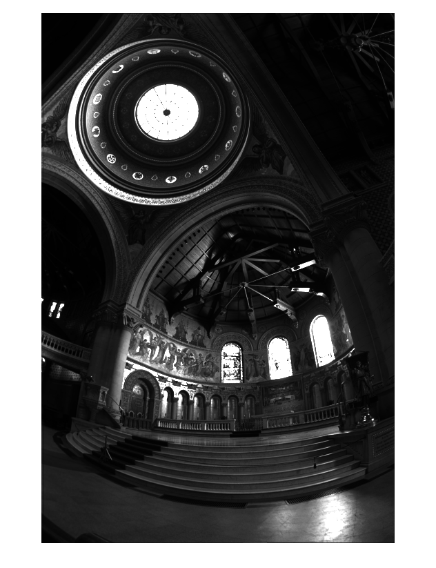
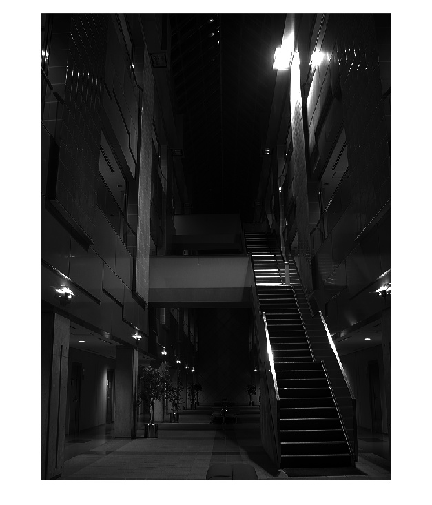
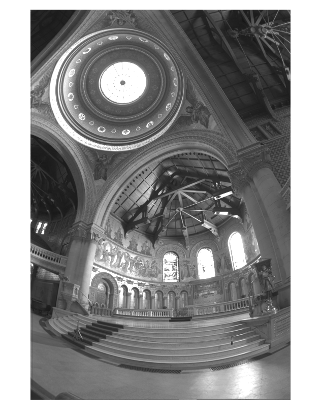
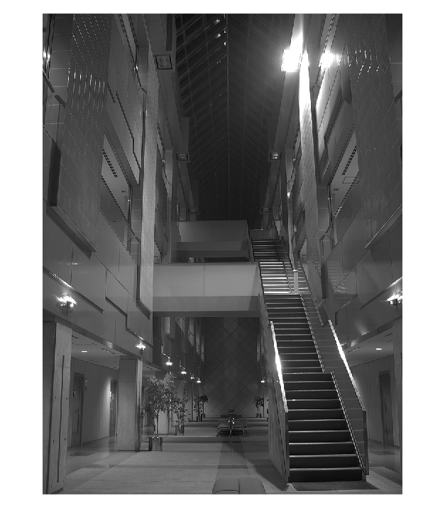
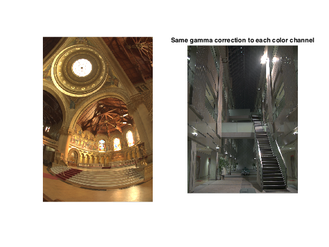
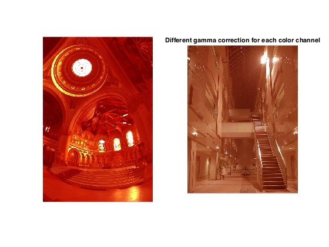

Contents
clear all;
close all;
Question 1. Part A
contrast_display = 1000^(3/2);
display(['The contrast of the display must be : ' num2str(contrast_display) ' : 1']);
The contrast of the display must be : 31622.7766 : 1
Question 1. Part B
hdr_memorial = hdrread('hw1_data/hw1_memorial.hdr');
hdr_atrium = hdrread('hw1_data/hw1_atrium.hdr');
gray_memorial = rgb2gray(hdr_memorial);
gray_atrium = rgb2gray(hdr_atrium);
figure; imshow(gray_memorial);
figure; imshow(gray_atrium);
Warning: Image is too big to fit on screen;
displaying at 67%
 
Question 1. Part C
gamma_memorial = 0.4;
gamma_atrium = 0.5;
gray_memorial_gamma = gray_memorial .^ gamma_memorial;
gray_atrium_gamma = gray_atrium .^ gamma_atrium;
figure; imshow(gray_memorial_gamma);
figure; imshow(gray_atrium_gamma);
display(['The gamma for the memorial scene is : ' num2str(gamma_memorial)]);
display(['The gamma for the atrium scene is : ' num2str(gamma_atrium)]);
Warning: Image is too big to fit on screen;
displaying at 67%
The gamma for the memorial scene is : 0.4
The gamma for the atrium scene is : 0.5
 
Question 1. Part D
for i = 1:3
hdr_memorial_gamma(:,:,i) = hdr_memorial(:,:,i) .^ gamma_memorial;
hdr_atrium_gamma(:,:,i) = hdr_atrium(:,:,i) .^ gamma_atrium;
end
figure;
subplot(1,2,1); imshow(hdr_memorial_gamma);
subplot(1,2,2); imshow(hdr_atrium_gamma);
title('Same gamma correction to each color channel');
gamma_memorial = [0.2, 1.0, 1.0];
gamma_atrium = [0.2, 0.5, 0.7];
for i = 1:3
hdr_memorial_gamma(:,:,i) = hdr_memorial(:,:,i) .^ gamma_memorial(i);
hdr_atrium_gamma(:,:,i) = hdr_atrium(:,:,i) .^ gamma_atrium(i);
end
figure;
subplot(1,2,1); imshow(hdr_memorial_gamma);
subplot(1,2,2); imshow(hdr_atrium_gamma);
title('Different gamma correction for each color channel');
 